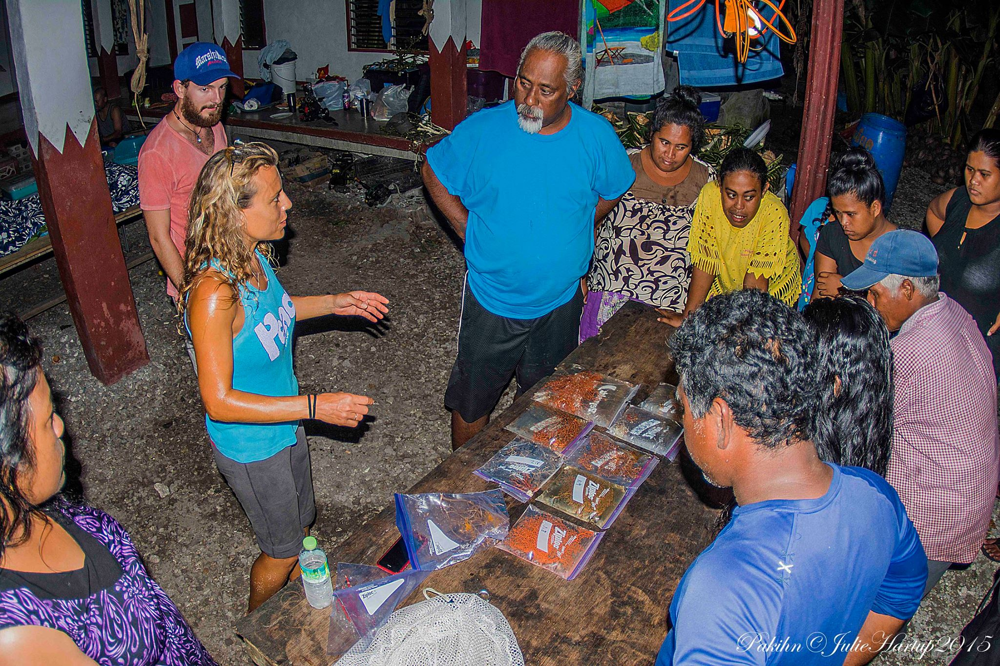

Dr Sarah Rowley · Mesophotic Research Initiative · 2024–2026

Evolutionary marine biologist and CCR diving pioneer with over 40 years of diving experience. Dr Rowley specialises in gorgonian octocoral taxonomy and mesophotic reef ecology, working at depths of 50–181m where few researchers have ventured. Her work on new species discovery and deep reef conservation spans the Indo-Pacific.
Dr Rowley leads the Atolla Research Initiative, based at the Scripps Institution of Oceanography. She is also Research Faculty at SOEST University of Hawaii, Scientific Associate at the Natural History Museum London, and Research Associate at the Smithsonian Institution.
Return expedition to Pohnpei and surrounding atolls. Extended CCR diving programme to 181m with specimen collection, phylogenomic sampling, and habitat photography across 12 study sites.
Collaboration with the Natural History Museum London and Smithsonian Institution to formally describe new gorgonian species collected during field expeditions. eDNA sampling initiated across 12 study sites to complement physical specimen data.
First expedition to breach the 1,000m threshold with a new pressure-rated ROV. Unprecedented observations of bioluminescent displays at bathypelagic depths. Data currently under peer review for Nature Communications.
Full dataset release to the global research community via open access repositories. Citizen science programme to assist with specimen classification from expedition footage and photography. Continued field expeditions to Pohnpei and Timor-Leste through 2027.
Each expedition dive day carries real costs in equipment, logistics, and crew. Contributions of any size directly extend the number of survey days we can complete in 2026. Supporters receive field dispatches and early access to findings.
Support the expedition →Institutions and companies working in marine science, climate research, or ocean technology are invited to join as formal research partners. Partnerships include co-authorship opportunities and access to the full expedition dataset.
Partner with us →